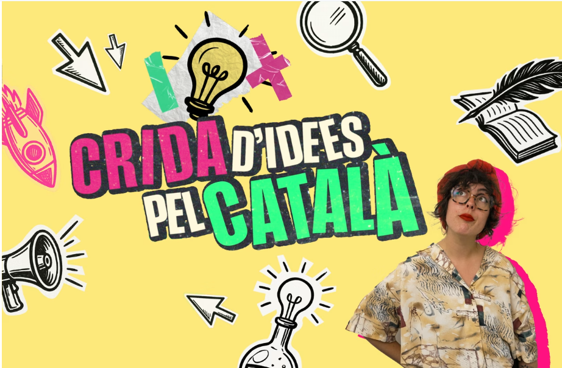

La meva ideia
La meva proposta era l'Àdhuc, una aplicació mòbil, web i per a escriptori que et permet apendre català de manera gamificada de la mateixa manera que ho faria el Duolingo (una app molt famosa per apendre idiomes) sense les traves que aquesta mateixa aplicació presenta. Qui no ha fet servir Duolingo pensant-se que apendrà francés o italià en qüestió de setmanes i s'ha trobat, dos anys després, amb una ratxa de 110 setmanes sense ser capaç de mantenir una conversa de més de 5 minuts amb un parlant nadiu? Doncs bé, la idea d'Àdhuc era (dic "era" perquè no sé si la tiraré endavant) passar de tot el contingut gamificat i ultra-addictiu d'aquesta arxi-coneguda aplicació i centrar-nos en la part que més ens preocupa: l'aprenentatge. És per això que la plataforma que ens proposava la fundació Carulla era prou interessant, ja que a més de proporcionar-nos un guiatge de mans d'experts, oferia una contribució econòmica suficientment interessant que m'hagués permès contractar un/a dissenyador/a i un/a lingüista.
Àdhuc hagués tingut un seguiment diari o setmanal de les sessions d'aprenentatge adaptades a un nivell concret (A1, B2, etc) i, amb l'ajuda d'aquest/a lingüista, haguéssim construït un itinerari efectiu per tal d'acomplir aquest objectiu de manera comprobable, amb proves de nivell i examinacions.
L'aplicació també hagués gaudit d'una plataforma per posar en contacte l'alumnat (és a dir, l'usuari) amb les comunitats de catalano-parlants més properes a nivell geogràfic, per tal de poder posar en pràctica el que has après dins de l'aplicació, de la mateixa manera que també proporcionaria una plataforma per a professors que s'hi volguessin publicitar per tal de saltar a un aprenentatge d'u a u amb els usuaris que això ho desitgessin.
Vídeo explicatiu de com seria Àdhuc
Se m'oblida el més important! El tipus d'usuari que volem abarcar dins d'aquest projecte. Recapitulant i tornant a la frase promocional d'aquesta crida, fomentar l'ús social del català, el perfil de potencials usuaris d'aquesta aplicació està ben clar:
- Persones nouvingudes a la cua d'espera dels cursos oficials de català de la Generalitat, que fa mesos que estan plenes.
- Expats que s'han adonat que xapurrejant quatre paraules de català de cop la gent és una mica més simpàtica.
- Les persones que no han rotulat els seus negocis en català o les que tenen problemes per traduïr la carta del seu restaurant.
- Els fans de la selecció espanyola de futbol (Ugh) que tenen interès en pronunciar correctament Xavi Hernández o Cesc Fàbregas (les dues o tres que deuen existir).
- Qualsevol altra persona interessada en la cultura i la llengua catalanes.
Les ideies escollides
Entre les idees escollides (de moment només en coneixem el nom), hi podem trobar Adhesius pel català -suposem que es tracta d'stickers per a Whatsapp i similars-, BRESSOLANT EN CATALÀ -cançons de bressol en català, imagino?-, IndieCAT -diria que hi ha 4 programes d'iCat que es diuen igual-, REBOST, RUSC, SENY o EXPLICA'M UN RAP -rap en català(?)-. Sé que estic sonant ràbies però quan vaig llegir les idees triades, he de reconèixer que em vaig picar. Ara ja he tingut temps per a reflexionar i, partint d'un desconeixement absolut de sobre què tracten la majoria dels projectes, reconec que hi ha opcions força interessants i espero que fructifiquin, encara que no acabin sent les idees definitives (crec que no hi havia dit però l'idea guanyadora és pot endur fins a 20.000€, d'aquí el meu pique). En fi... La vida són dos dies i la meitat te la passes dormint.
I ara què faig?
Doncs mira, és una bona pregunta. Me la faig cada dia realment. La idea em sembla interessant i que li podria donar una continuïtat, però és un projecte extremadament exigent tant en l'aspecte de temps com en l'aspecte econòmic, és una empresa que no puc empendre sol. Així que, si estàs llegint això i ets lingüista o dissenyador web, o formes part d'alguna organització que vetlli per la salut del català i et sembla un projecte interessant, posa't en contacte amb mi i mirarem què hi podem fer
Se m'oblidava! El mot àdhuc en català antic vol dir "fins i tot" o "encara". L'he triat perquè és un mot indefectiblement català i que sona a la primera part de la paraula Educació jeje. Divertit, oi? Això pensava jo però sembla que no els ho ha semblat als jutges de la Crida. Què hi farem... (També em recorda al Montilla del Polònia, malaguanyat Sergi Mas).